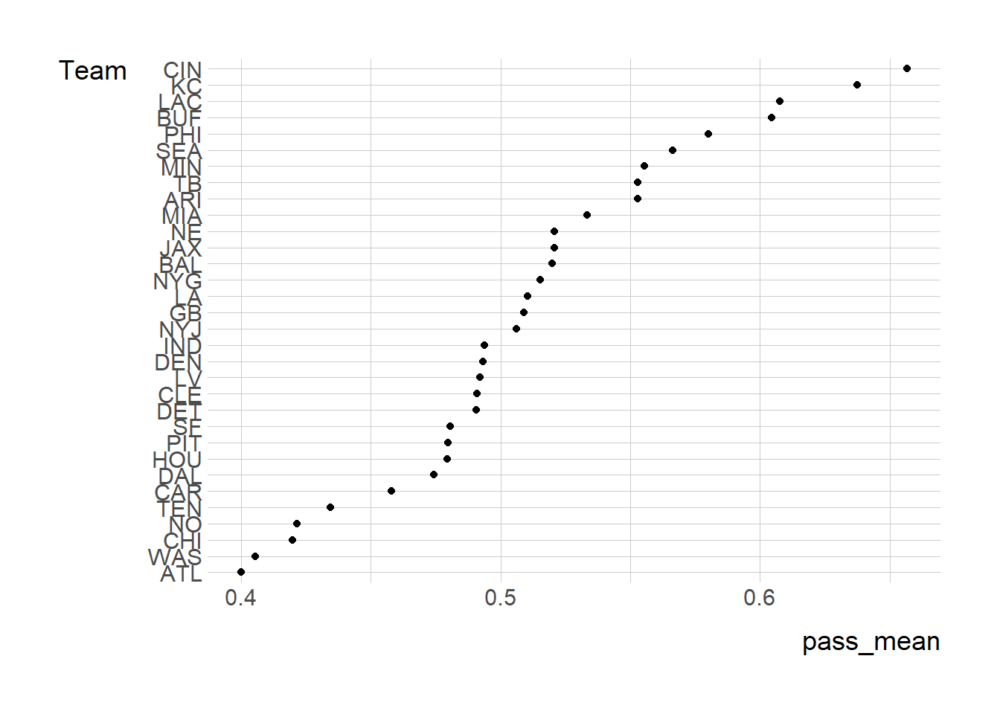
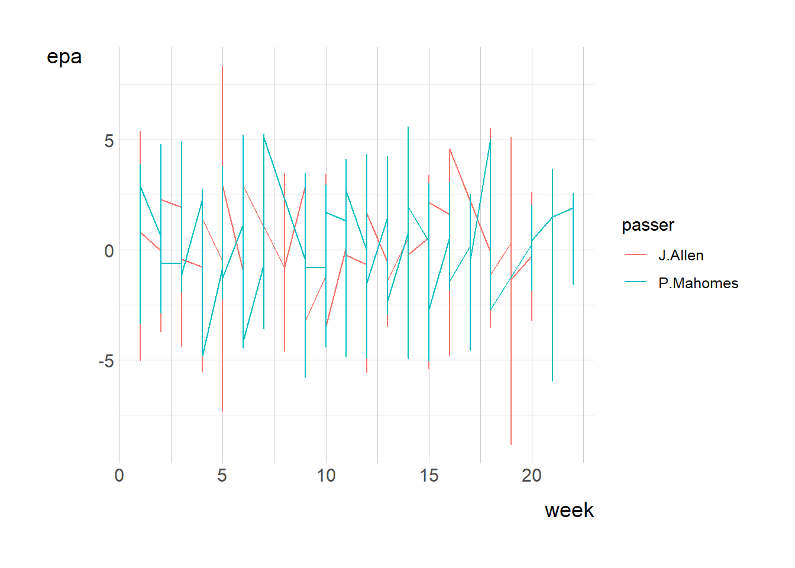

NFL2022_stuffs <- read_csv('https://bcdanl.github.io/data/NFL2022_stuffs.csv')Github link:(https://github.com/devli26/devli26.github.io)
Q2a
In data.frame, NFL2022_stuffs, remove observations for which values of posteam is missing.
Q2a <- NFL2022_stuffs %>%
filter(!is.na(posteam))Q2b.
Summarize the mean value of pass for each posteam when all the following conditions hold: wp is greater than 20% and less than 75%; down is less than or equal to 2; and half_seconds_remaining is greater than 120.
q2b <- NFL2022_stuffs %>%
filter(wp > .2, wp < .75,
down <=2,
half_seconds_remaining >120)
q2pass <- q2b %>%
group_by(posteam) %>%
summarize(pass_mean= mean(pass))Q2c.
Provide both (1) a ggplot code with geom_point() using the resulting data.frame in Q2b and (2) a simple comments to describe the mean value of pass for each posteam. In the ggplot, reorder the posteam categories based on the mean value of pass in ascending or in descending order.
q2c <- q2pass %>% mutate(Team = fct_reorder(posteam, pass_mean))
ggplot(q2c) +
geom_point(aes(x = pass_mean, y = Team ))
Q2d
Create the data.frame, NFL2022_stuffs_EPA, that includes
All the variables in the data.frame, NFL2022_stuffs; The variables, passer, receiver, and epa, from the data.frame, NFL2022_epa. by joining the two data.frames. In the resulting data.frame, NFL2022_stuffs_EPA, remove observations with NA in passer.
NFL2022_epa <- read_csv('https://bcdanl.github.io/data/NFL2022_epa.csv')
NFL2022_stuffs_EPA <- NFL2022_stuffs %>% left_join(NFL2022_epa) %>%
filter(!is.na(passer))Q2e.
Provide both (1) a single ggplot and (2) a simple comment to describe the NFL weekly trend of weekly mean value of epa for each of the following two passers, “J.Allen” “P.Mahomes”
NFL2022_stuffs_EPA_passers <- NFL2022_stuffs_EPA %>%
filter(passer %in% c("J.Allen", "P.Mahomes"))
ggplot(NFL2022_stuffs_EPA_passers) +
geom_line(aes(x = week, y = epa,
color= passer))
#J.Allen epa seems to have a trend of decreasing as weeks passes. P.Mahomes epa seems more consistent as weeks passes.Q2f.
Calculate the difference between the mean value of epa for “J.Allen” the mean value of epa for “P.Mahomes” for each value of week.
mean_epa <- NFL2022_stuffs_EPA_passers %>%
group_by(passer, week) %>%
summarise(mean= mean(epa)) %>%
pivot_wider(names_from = "passer",
values_from = "mean") %>%
mutate(diff_mean = J.Allen-P.Mahomes)Q2g.
Summarize the resulting data.frame in Q2d, with the following four variables:
posteam: String abbreviation for the team with possession. passer: Name of the player who passed a ball to a receiver by initially taking a three-step drop, and backpedaling into the pocket to make a pass. (Mostly, they are quarterbacks.) mean_epa: Mean value of epa in 2022 for each passer n_pass: Number of observations for each passer Then find the top 10 NFL passers in 2022 in terms of the mean value of epa, conditioning that n_pass must be greater than or equal to the third quantile level of n_pass.
Q2g <- NFL2022_stuffs_EPA %>%
group_by(posteam, passer) %>%
summarise(mean_epa= mean(epa)) %>%
mutate(n_pass= n())
top10 <- Q2g %>%
arrange(desc(mean_epa)) %>%
head(10)